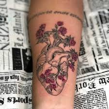

Is Agile the latest Fad in the industry?
Agile has its own fair share of Fans and Critics. Critics love to point out the drawbacks of Agile and how it is undisciplined as compared to traditional waterfall model. But Agile is all about VALUES! Values can never be fads. You believe in them and cherish them , or you don’t. Agile, like any other new idea should be understood properly and applied whole-heartedly; else it will never live to its initial promise. On a final note, I leave it up to you to cherish the ‘Agile Values’ and build better and better products based on them.


Autoaprendizaje

La gestión ágil de proyectos o Agile Project Management es un conjunto de metodologías para el desarrollo de proyectos que precisan de una especial rapidez y flexibilidad en su proceso. En muchas ocasiones son proyectos relacionados con el desarrollo de software o el mundo de internet


Enjoying life is often thought to be a mindset, the result of reflection, action and gratitude. And while most of us lack sufficient free time to escape to some mountaintop temple to follow our bliss, the best way to find happiness is to make practical, everyday changes. Coupled with conscious choices to appreciate the people in your life and making space to do the things you're best at, small changes to your life soon add up to greater enjoyment in life.